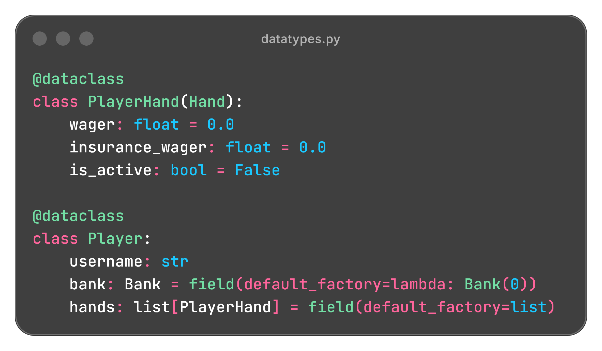
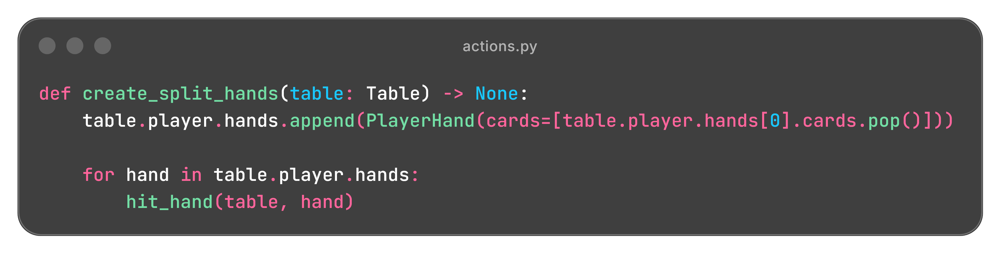
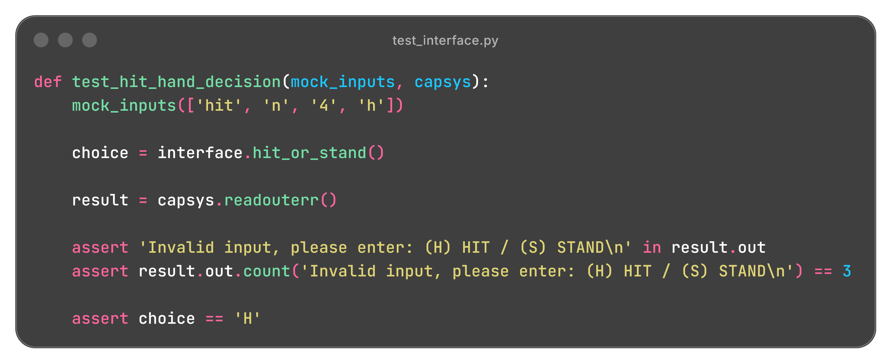

Python • pytest • JSON
View GitHub RepoA command line Blackjack game built in Python with persistent player profiles, wagering, splitting, insurance, and modular game logic. The project separates game orchestration, rule validation, payouts, storage, and terminal interaction while using structured objects to manage round state.
The game is organized as a Python package that separates round orchestration, game state,
rule evaluation, terminal interaction, payouts, and persistence into dedicated modules.
game.py coordinates the round lifecycle while structured objects carry
state between each part of the application.
blackjack/
├── src/
│ └── blackjack/
│ ├── game.py
│ ├── datatypes.py
│ ├── actions.py
│ ├── conditions.py
│ ├── payout_calculator.py
│ ├── interface.py
│ ├── storage.py
│ └── ...
├── tests/
│ ├── conftest.py
│ ├── test_actions.py
│ └── ...
└─── pyproject.toml
game.py coordinates the initial deal, player turns, dealer turns, and
round resolution.
datatypes.py defines the player, dealer, hands, table, insurance,
outcomes, and split hand state used throughout the game.
actions.py modifies game state, while conditions.py
evaluates rules and determines when actions or round transitions are valid.
payout_calculator.py calculates wager returns for blackjack, wins,
pushes, insurance, and other outcomes.
interface.py handles terminal input and output, while
storage.py loads and saves player profiles and chip balances through JSON.

The game supports the full round lifecycle, including player actions, dealer logic, rule validation, and payout resolution. More complex actions such as splitting require each hand to maintain its own cards, wager, and outcome state.
The player can choose from several actions during a hand, with each action validated against the current game state before it is executed.
Draws another card and reevaluates the hand.
Ends play for the current hand.
Increases the wager, draws one final card, then ends the hand.
Separates a qualifying starting hand into two independently played hands.
Allows a side wager when the dealer shows an Ace.
Game rules are evaluated continuously as the round progresses, allowing the program to determine which actions are valid and when control should move to the next phase.
Calculates hand totals and adjusts Ace values between 1 and 11 to avoid unnecessary busts.
Checks whether actions such as split or double down are currently allowed.
Tracks when a player hand is complete and determines when control should move to another hand or to the dealer.
Automatically draws or stands according to the dealer rules.
Detects states such as blackjack, busts, completed hands, and other conditions that can end or alter the round.
Once play is complete, the game compares the player and dealer states to determine the result of each hand and update the player's bankroll accordingly.
Applies the blackjack payout when the player has a natural 21.
Resolves the wager based on the final hand values.
Returns the original wager when the player and dealer tie.
Resolves the insurance side bet separately from the main hand.
Uses the increased wager when calculating the final payout.
Resolves each split hand independently, allowing different outcomes within the same round.
Initial Deal
↓
Check Immediate Conditions
↓
Player Turn
↓
Player Chooses Split
↓
Create Two Independent Hands
↓
Play Each Hand
↓
Dealer Turn
↓
Resolve Outcomes

The project uses pytest to verify both individual game components and complete gameplay paths, including edge cases around splitting, insurance, dealer behavior, and round resolution.
Validate hand values, deck behaviors, wagers, payouts, and game state conditions.
Uses monkeypatch to simulate player input during CLI flows.
Uses capsys to confirm expected terminal output.
Tests full round paths such as blackjack, busts, insurance, splits, and dealer resolution.

Testing a command line game was difficult because much of the gameplay depended on
input() and printed output. I learned to use pytest tools such
as monkeypatch and capsys to simulate user actions and verify
terminal responses, which made it possible to automate full gameplay scenarios instead
of testing them manually.
Adding split functionality introduced multiple player hands that each needed their own
cards, wager, turn state, and outcome. I refined the implementation so each split hand
used the same PlayerHand structure as a normal hand, allowing the rest of
game logic to handle them consistently without relying on special cases.
As the project grew, I had to reconsider where different pieces of state and behavior belonged. Separating generic hand behavior from player and dealer specific responsibilities helped me better understand class design, inheritance, and how assigning responsibility to the correct object can keep a codebase easier to maintain.